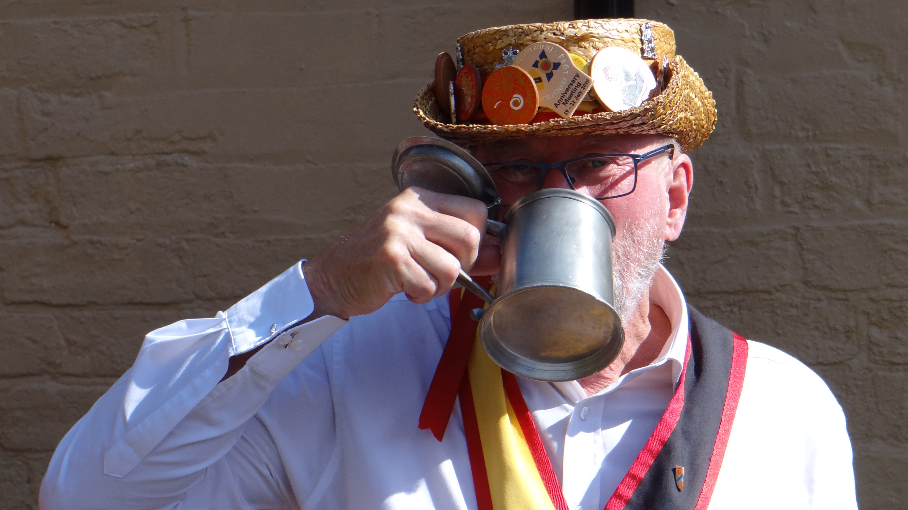
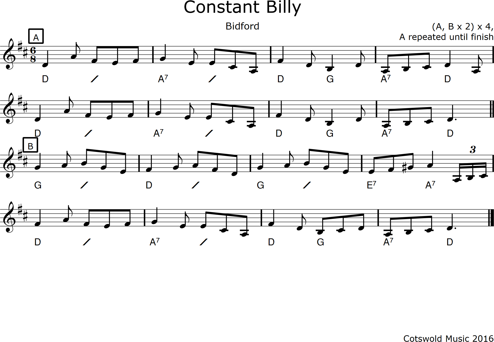

Hello Mel and Mathew,
This is a first go at trying to layout the pages and the navigation. Initially I am trying to focus on the page layout, but particularly focusing on a page layout that is compatible with mobile phones, tablets, laptops and PCs. Try resizing the screen or using it on different devices and see what you think. For now this page is just for messing about and trying different ideas. I will delete it once we have something worth looking at.
The images and text are just palceholders and we can change just about everything. I've tried to keep the menu very simple with the main tabs to view. Additional additional pages under the 'more......' tab. We could replace this with a burger, i.e. 3 horizontal lines, if you would prefer. Initally I think we should go for keeping things very clean and simple, ideally with a bit of a modern look.
As a future refinement we could add music dance instructions, possibly protected by password. I've given a bit of an example below but, for now, I think that is a distraction, so while I'm tempted I'm not going to look at it now.I've written it all in native code, which should mean it is easy to relocate and maintain. I'm not sure where it is hosted and what is available, but will worry about that another day.
The diary on the calendar tab is just an experiment at the moment. It is currently linked to a diary on my personal Google account, but could just as easily be added to a diary on the Shakespeare Morris account. It could provide an easy way to keep things up to date, but probably needs to be seperate from the general calendar so it doesn't get filled up with crap!
I quite like the picture at the top of the home page, but I only have a very low resolution version of it that doesn't look that great on my laptop - we can fix that.
We could also do video if it is of an appropriate resolution. I would have put something in but don't have anything.
I would propose that the footer contains a link to our facebook pages via an icon - easy to do just haven't got round to it yet. Do we do Instrgram?
I've set out the next steps below. Let me know what you think and tell me what you would like.
An idea for a header and how to incorporate Shakespeare colours. I can come up with more ideas if you think it is worth bothering with. I was going to suggest we put something like this at the top of the some or all of the pages.
There are lots of options. I'd be keen to go for something modern.
Obviously everything would line up if the font was the same.
We can obviously also change the colour and size of the font.
We can of course do images in different layouts.
We could have a full width image, either right up to the edge or set in a bit.
Two images side by side that appear in a column on a mobile. It would also be perfectly reasonable to put an image in one side and text or a caption in the other.
Three images side by side that appear in a column on a mobile.
Four images side by side that appear in a column on a mobile.
If required we could add borders or other visual treatments.
We can of course do this sort of stuff. We could easily adjust the timing or the transitions. I wouldn't recommend more than ten to fifteen images in a carousel.
We could incorporate music on our hidden pages, something like this.
And we could have the dots.
Downloading PDF file of the music is also a possibility.
Adding dance instructions is very easy - something like the following Standton Harcourt dance below as an example. Could be in a different font or colour or with a different background.
Set of 6, in 3 pairs - conventional.
Handkerchief. A Side Step and Half Hey dance.
All Dancers face up and dance 4 bars of Side Step vigorously on the spot and not moving forward, then Half Hey. Repeat again with all facing up for the Side Step.
Note during the Half Hey the bottom pair does a full turn, despite the way they are facing.
This dance can be used as a processional dance moving forward rapidly on the Side Step.
Below is a first version of a footer. I think this should include a link to the socials and include a email address, possibly even a telephone number. I could make the footer sit at the bottom of the screen if that is preferable.